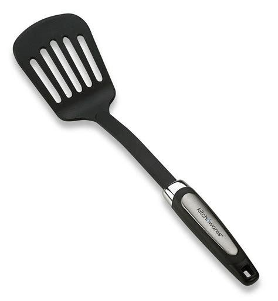

Victoria's Journal
So fresh and so clean
Friends
- 390 Buddies
- Big Will
- Conan the Librarian
04/09/08: Spatulas
Yesterday, I went to the store and got some much needed spatulas! (what better way to say I love myself than to buy myself a spatula?)
So fresh and so clean
Yesterday, I went to the store and got some much needed spatulas! (what better way to say I love myself than to buy myself a spatula?)